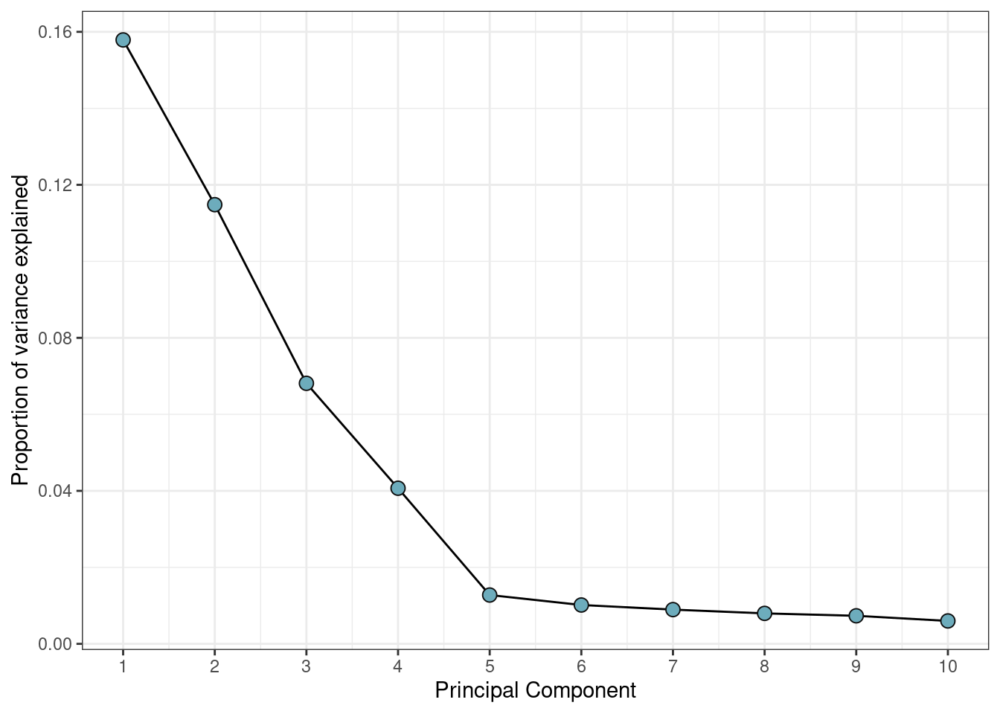

Our workflow outline the use of functional normalization16, which exploits internal control probes designed to detect technical variations without assaying biological differences, and dasen as implemented by wateRmelon30. Both are adjusted and updated to use the interpolatedXY method31.
Functional normalization has been shown to perform favourably when compared to other approaches17. Using the internal control probes avoids the problems associated with global normalization methods, where biological variation can be mistaken for a technical effect and removed. This is especially important in studies where groups are expected to have differential methylation signatures, such as multiple tissue studies18.
Conversations on the best approaches for normalization in DNAm data pipelines are ongoing19.
The default of selecting only two principal components is often too low for this type of data. Often you will see a drop-off in proportion of variance explained after a certain number of principal components, and this can indicate an efficient selection.
var_explained %>% ggplot(aes(x=PC, y=var_explained)) +
geom_line() +
geom_point(color='grey5', fill='#6DACBC', shape=21, size=3) +
scale_x_continuous(breaks=1:ncol(pca$x)) +
xlab("Principal Component") +
ylab("Proportion of variance explained") +
theme_bw()
In order to run normalization the annotation of the RGset must be updated for EPIC arrays.
We use the adjustedFunnorm function from wateRmelon, which uses the interpolated XY method31. By default, functional normalization returns normalized copy number data making the returned GenomicRatioSet twice the size necessary when only beta-values or M-values are required. Therefore, we set keepCN to FALSE.
GRset <- adjustedFunnorm(
rgSet = RGset,
nPCs = 4,
sex = ifelse(targets$sex == "Female", 0, 1),
keepCN = F,
verbose = T
)## [adjustedFunnorm] Background and dye bias correction with noob## Loading required package: IlluminaHumanMethylationEPICanno.ilm10b4.hg19##
## Attaching package: 'IlluminaHumanMethylationEPICanno.ilm10b4.hg19'## The following objects are masked from 'package:IlluminaHumanMethylation450kanno.ilmn12.hg19':
##
## Islands.UCSC, Locations, Manifest, Other, SNPs.132CommonSingle,
## SNPs.135CommonSingle, SNPs.137CommonSingle, SNPs.138CommonSingle,
## SNPs.141CommonSingle, SNPs.142CommonSingle, SNPs.144CommonSingle,
## SNPs.146CommonSingle, SNPs.147CommonSingle, SNPs.Illumina## [adjustedFunnorm] Mapping to genome## [adjustedFunnorm] Quantile extraction## [adjustedFunnorm] Normalization## class: GenomicRatioSet
## dim: 865859 598
## metadata(0):
## assays(1): Beta
## rownames(865859): cg14817997 cg26928153 ... cg07587934 cg16855331
## rowData names(0):
## colnames(598): GSM3228563_200550980002_R02C01
## GSM3228564_200550980002_R03C01 ... GSM3229238_200598360007_R07C01
## GSM3229239_200598350080_R03C01
## colData names(25): sample_ID geo_accession ... Neu Mono
## Annotation
## array: IlluminaHumanMethylationEPIC
## annotation: ilm10b4.hg19
## Preprocessing
## Method: NA
## minfi version: NA
## Manifest version: NAIt is also possible to use adjustedDasen to apply dasen normalization to normalize autosomal CpGs and infer the sex chromosome linked CpGs by linear interpolation on corrected autosomal CpGs. Instead of outputting a GRset, this function outputs the normalized beta values. Therefore, using this normalization removes the need for the DNAmArray reduce function in the next steps.
betas <- adjustedDasen(mns = methylated(RGset),
uns = unmethylated(RGset),
onetwo = fData(RGset)[,fot(RGset)],
chr = fData(RGset)$CHR)